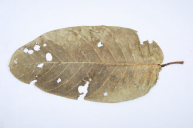
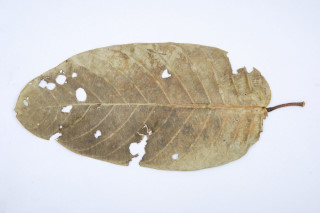

Trees up to 30 m tall.
30 ಮೀ ಎತ್ತರದವರೆಗೆ ಬೆಳೆಯುವ ಮರಗಳು.
30 മീറ്റര് വരെ ഉയരമുളള മരങ്ങള്
மரம் 30 மீ. உயரம் வரை வளரக்கூடியது.
Bark grey, smooth.
ತೊಗಟೆ ನಯವಾಗಿದ್ದು, ಬೂದು ಬಣ್ಣದಲ್ಲಿರುತ್ತದೆ.
നരച്ചനിറത്തിലുളളതും, മിനുസമാര്ന്നതുമായ പുറംതൊലി.
மரத்தின் பட்டை பழுப்பு நிறம், வழுவழுப்பானது.
Exudates resinous.
ಜಿನುಗು ದ್ರವ ಅಂಟುರೂಪದಲ್ಲಿರುತ್ತದೆ.
കൊഴുത്തസ്രവം
ரெசினஸ் சாறு.
Leaves simple, alternate, spiral; petioles 2.5-6 cm long, swollen at apex, minutely pubescent; lamina 13-30 x 6.5-16 (40 x 20 cm), elliptic-oblong or oblong-lanceolate, apex acuminate with blunt tip, base rounded or subcordate, entire, coriaceous, glabrous or rarely with a few stellate hairs at the base and midrib beneath; midrib raised above; secondary_nerves ca. 19 pairs; tertiary_nerves obliquely_percurrent.
ಎಲೆಗಳು ಸರಳವಾಗಿದ್ದು, ಪರ್ಯಾಯ ಹಾಗೂ ಸುತ್ತು ಜೋಡನಾ ವ್ಯವಸ್ಥೆಯಲ್ಲಿರುತ್ತವೆ;ಕಾವಿನೆಲೆಗಳು ಉದುರು ಮಾದರಿಯವು;ತೊಟ್ಟುಗಳು ಸೂಕ್ಷ್ಮವಾದ ರೋಮಗಳಿಂದ ಕೂಡಿದ್ದು, 2.5 ರಿಂದ 6 ಸೆಂ.ಮೀ. ಉದ್ದವಿದ್ದು ತುದಿಯಲ್ಲಿ ಊದಿಕೊಂಡಿರುತ್ತವೆ;ಪತ್ರಗಳು 13-30 X 6.5-16 (40 X 20) ಸೆಂ. ಮೀ.ಗಾತ್ರ, ಅಂಡವೃತ್ತ-ಚತುರಸ್ರದ ಅಥವಾ ಚತುರಸ್ರ-ಭರ್ಜಿಯ ಆಕಾರ, ಮೊಂಡಾದ ಅಗ್ರವುಳ್ಳ ಕ್ರಮೇಣ ಚೂಪಾಗುವ ತುದಿ,ದುಂಡಾದುದರಿಂದ ಉಪ-ಹೃದಯಾಕಾರದ ಬುಡ, ನಯವಾದ ಅಂಚು ಹಾಗೂ ತೊಗಲನ್ನೋಲುವ ಮೇಲ್ಮೈ ಹೊಂದಿರುತ್ತವೆ.ಸಾಮಾನ್ಯವಾಗಿ ರೋಮರಹಿತವಾಗಿರುತ್ತವೆ ಅಥವಾ ಅಪರೂಪವಾಗಿ ಪತ್ರದ ತಳಭಾಗದ ಬುಡ ಮತ್ತು ಮಧ್ಯನಾಳ ನಕ್ಷತ್ರರೋಮಗಳಿಂದ ಕೂಡಿರುತ್ತವೆ; ಮಧ್ಯನಾಳ ಪತ್ರದ ಮೇಲ್ಭಾಗದಲ್ಲಿ ಉಬ್ಬಿರುತ್ತದೆ;ಎರಡನೆ ದರ್ಜೆಯ ನಾಳಗಳು ಅಂದಾಜು 19 ಜೋಡಿಗಳಿರುತ್ತವೆ;ಮೂರನೇ ದರ್ಜೆಯ ನಾಳಗಳು ಓರೆಯಾಗಿ ಎಲೆದಿಂಡಿಗೆ ಅಡ್ಡವಾಗಿ ಕೂಡುವಂತವು.
ലഘുവായ ഇലകള്, ഏകാന്തരമായി, സര്പ്പിളക്രമത്തിലാണ്; നനുത്തരോമിലമായതും അറ്റം വീര്ത്തതുമായ ഇലഞെട്ടിന് 2.5 സെ.മീ മുതല് 6 സെ.മീ വരെ നീളം; പത്രഫലകത്തിന് 13 സെ.മീ മുതല് 30 സെ.മീ വരെ നീളവും 6.5 സെ.മീ മുതല് 16 സെ.മീ വരെ വീതിയും (ചിലപ്പോള് 40 സെ.മീ നീളവും 20 സെ.മീ വീതിയും) ദീര്ഘവൃത്തീയ ആയതാകാരമോ ആയത - കുന്താകൃതിയോ ആണ്. മുനപ്പില്ലാത്ത അറ്റത്തോടുകൂടിയ ദീര്ഘാഗ്രവും, പത്രാധാരം വൃത്താകാരമോ ഉപഹൃദയോകാരമോ ആണ്, അവിഭജിതം, ചര്മ്മില പ്രകൃതം, അരോമിലമോ അപൂര്വ്വമായി പത്രാധാരത്തിലും കീഴ്ഭാഗത്ത് മുഖ്യസിരയിലും അല്പ്പം നക്ഷത്രാകാര രോമങ്ങളുണ്ടാകും; മുഖ്യസിര മുകളില് ഉയര്ന്നതാണ്; ഏതാണ്ട് 19 ജോഡി ദ്വതീയ ഞരമ്പുകളുണ്ട്; ത്രിതീയ ഞരമ്പുകള് ചരിഞ്ഞ പെര്കറന്റ് വിധത്തിലാണ്.
இலைகள் தனித்தவை, மாற்றுஅடுக்கமானவை, சுழல் அமைப்பு கொண்டது; இலைக்காம்பு 2.5-6 செ.மீ., நுனியில் தடித்தது, நுண்ணிய உரோமங்களுடையவை; இலை அலகு 13-30 X 6.5 -16 (40x20) செ.மீ., நீள்வட்டம்–நீள்சதுர வடிவமுடையது அல்லது நீள்சதுர-ஈட்டி, அலகின் நுனி அதிக்கூரியது அல்லது மழுங்கியது, அலகின் தளம் வட்டமானது அல்லது சிறிய இதய வடிவானது (சப்கார்டேட்), இலை விளிம்பு சமதளமானது, கோரியேசியஸ், உரோமங்களற்றது அல்லது ஆங்காங்கே தளப்பகுதியில் மற்றும் அடிபரப்பில் மையநரம்பு நட்சத்திர வடிவ உரோமங்களுடையது; மையநரம்பு மேற்பரப்பில் உயர்ந்தது; இரண்டாம் நிலை நரம்புகள் 19 ஜோடிகள்; மூன்றாம் நிலை நரம்புகள் சாய்ந்தவாறு பெர்க்கரண்ட்.
Inflorescence in axillary panicles, hoary stellate pubescent; flowers ca. 3.3 cm across, pedicels 1.5-2.4 cm long.
ಪುಷ್ಪಮಂಜರಿ ದಟ್ಟವಾದ ನೆರೆತ ನಕ್ಷತ್ರರೋಮಗಳಿಂದ ಕೂಡಿದ, ಅಕ್ಷಾಕಂಕುಳಿನಲ್ಲಿರುವ ಪುನರಾವೃತ್ತಿಯಾಗಿ ಕವಲೊಡೆಯುವ ಮಾದರಿಯವು. ಹೂಗಳು ಅಂದಾಜು 3.3 ಸೆಂ.ಮೀ. ಸುತ್ತಳತೆಯಲ್ಲಿದ್ದು 1.5-2.4 ಸೆಂ.ಮೀ. ಉದ್ದದ ತೊಟ್ಟುಗಳನ್ನು ಹೊಂದಿರುತ್ತವೆ.
കനത്തില് നക്ഷത്രാകാര രോമിലമായ, പൂങ്കുലകള് കക്ഷീയ പാനിക്കിളുകളാണ്; പൂഞെട്ടിന് 1.5 സെ.മീ മുതല് 2.4 സെ.മീ വരെ നീളമുളള പൂക്കള്ക്ക് ഏതാണ്ട് 3.3 സെ.മീ കൂറുകേയുണ്ട്.
மஞ்சரி இலைக்கோணங்களில் காணப்படும், பேனிக்கிள்ஸ்; அடர்ந்த நட்சத்திர வடிவ உரோமங்களுடையது, மலர்கள் 3.3 செ.மீ., குறுக்களவுடையது, மலர்க்காம்பு 0.5 செ.மீ. நீளமானது.
Capsule, large, ca. 11 x 6 cm with persistent_calyx, lobes reflexed; seed 1.
ಸಂಪುಟ ಫಲಗಳು ಅಂದಾಜು 11 X 6 ಸೆಂ.ಮೀ. ಗಾತ್ರದಲ್ಲಿದ್ದು ಹಿಂಬಾಗಿದ ಪುಷ್ಪಪಾತ್ರೆಯ ಪತ್ರಗಳ ಸಮೇತವಿರುತ್ತವೆ;ಬೀಜಗಳು ಒಂದು.
കായ, പിന്നാക്കം വളഞ്ഞ വിദളങ്ങളോടുകൂടിയ, ഏതാണ്ട് 11 സെ.മീ നീളവും 6 സെ.മീ വീതിയുമുളള, വലിയ കാപ്സ്യൂള് ആണ്; ഒറ്റ വിത്തുമാത്രം.
வெடிகனி (கேப்சூல்), பெரியது, 11 X 6 செ.மீ., புல்லி இதழ்கள் நிரந்தரமானவை, வளைந்தது; ஒரு விதை கொண்டது.

 
